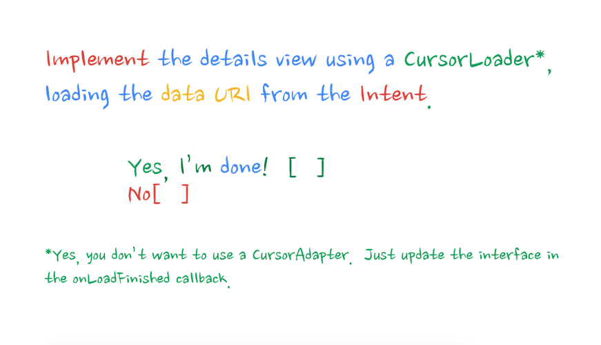

Android Study Jam: Lesson 4c

do we speak english or german?
Thanks to

for this space
<-- Drinks/Toilet
Please donate something per drink.
WiFi password -->
Hi, my name is Mario, and who are you?
Please keep it short, and if we are already familiar, ignore.
Lesson 4b
Content Provider
4 Steps in building a content provider

Lesson 4c
Loader
similar to first lessons: binding ui to background is bad

read data from provider
change ForecastAdapter from ArrayAdapter to CursorAdapter
move ui related code to Utility, and out of the task
Problem: Query will be executed on UI thread, see above

Leaving out checkmark slides
Fragment!
LOADER_ID can be "anything" but unique per LoaderManager.
public class ForecastFragment
extends Fragment
implements LoaderManager.LoaderCallbacks<Cursor> {
private static final int LOADER_WEATHER_ID = 0;
// [...]
@Override
public void onActivityCreated(@Nullable Bundle
savedInstanceState) {
super.onActivityCreated(savedInstanceState);
getActivity().getLoaderManager().initLoader(
LOADER_WEATHER_ID, null, this);
}@Override
public Loader<Cursor> onCreateLoader(int id,
Bundle args) {
final String locationSetting =
Utility.getPreferredLocation(getActivity());
final String sortOrder =
WeatherEntry.COLUMN_DATE + " ASC";
final Uri weatherForLocationUri =
WeatherEntry.buildWeatherLocationWithStartDate(
locationSetting,
System.currentTimeMillis());
return new CursorLoader(getActivity(), // context
weatherForLocationUri, // uri
null, // projection
null, // selection
null, // selection arguments
sortOrder); // sortorder
}@Override
public void onLoadFinished(Loader<Cursor> loader,
Cursor cursor) {
mForecastAdapter.swapCursor(cursor);
}
@Override
public void onLoaderReset(Loader<Cursor> loader) {
mForecastAdapter.swapCursor(null);
}
Ignoring check mark question, again
This and next code comes from WeatherContract
I just put it into WeatherContract. It might also live in ForecastFragment, but I wanted to keep it central ...
private static final String[] FORECAST_COLUMNS = {
WeatherEntry.TABLE_NAME + "." + WeatherEntry._ID,
WeatherEntry.COLUMN_DATE,
WeatherEntry.COLUMN_SHORT_DESC,
WeatherEntry.COLUMN_MAX_TEMP,
WeatherEntry.COLUMN_MIN_TEMP,
LocationEntry.COLUMN_LOCATION_SETTING,
WeatherEntry.COLUMN_WEATHER_ID,
LocationEntry.COLUMN_COORD_LAT,
LocationEntry.COLUMN_COORD_LONG
};static final int COL_WEATHER_ID = 0;
static final int COL_WEATHER_DATE = 1;
static final int COL_WEATHER_DESC = 2;
static final int COL_WEATHER_MAX_TEMP = 3;
static final int COL_WEATHER_MIN_TEMP = 4;
static final int COL_LOCATION_SETTING = 5;
static final int COL_WEATHER_CONDITION_ID = 6;
static final int COL_COORD_LAT = 7;
static final int COL_COORD_LONG = 8;
return new CursorLoader(getActivity(),
weatherForLocationUri,
WeatherContract.FORECAST_COLUMNS,
null,
null,
sortOrder);and now: Just use them also in the ui class
public String convertCursorRowToUXFormat(Cursor cursor) {
// get row indices for our cursor
String highAndLow = formatHighLows(
cursor.getDouble(COL_WEATHER_MAX_TEMP),
cursor.getDouble(COL_WEATHER_MIN_TEMP));
return Utility.formatDate(
cursor.getLong(COL_WEATHER_DATE)) +
" - " + cursor.getString(COL_WEATHER_DESC) +
" - " + highAndLow;
}We just got some code to display the url in the details, so use
this url to make another loader request, to update the data.

Remember to check the cursor and move it to first element! Also check livecycle of action provider.
public class DetailActivity
extends ActionBarActivity
implements LoaderManager.LoaderCallbacks<Cursor>{
@Override
protected void onCreate(Bundle savedInstanceState) {
// [...]
getLoaderManager().initLoader(
LoaderIds.LOADER_DETAIL_WEATHER_ID,
null,
this);
}@Override
public Loader<Cursor> onCreateLoader(/* */) {
return new CursorLoader(this,
getForecastUri(),
WeatherContract.FORECAST_COLUMNS,
null,
null,
null);
}updateShareIntent updates the member action providers share intent to the new data.
also: I reused the convertCursorRowToUxFormat method
@Override
public void onLoadFinished( /* ... */ ) {
if (cursor != null && cursor.getCount() > 0) {
cursor.moveToFirst();
final String text =
Utility.convertCursorRowToUXFormat(
this, cursor);
mTextView.setText(text);
updateShareIntent(text);
}
}
@Override
public void onLoaderReset(Loader<Cursor> loader) {
}Done.
Questions???